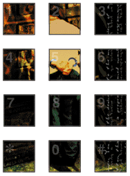
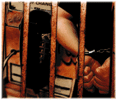

Tinseltown couldn't have staged a more strained and
obvious crime scene. On March 13, 1995, at approximately 8
p.m., four black men driving a rental van with Florida plates
pulled into a 7-11 parking lot in the mostly Caucasian township
of Haverford, Penn., just west of Philadelphia. There, they
waited. A couple of hours later, a second vehicle arrived and a
white man, dressed in business attire, stepped out and walked
over to the parked van. The five individuals began to talk and
engage in what looked like an unlawful transaction.
Detective John Morris of the Haverford Township Police
remembers receiving a call that night, tipping him off that a
drug deal was going down at the 7-11. Squad cars were
immediately dispatched. "I was in an undercover car pulling up
and I could see that one guy was holding money and it looked like
an exchange was going on," Morris recounts. "Cars were off to
the side in a manner other than people who patronize the store
and it looked out of place, it looked like something was wrong."
As suspicious as things may have appeared that evening,
nothing, in fact, was terribly amiss. Ed Cummings, a computer
and telecommunications consultant, was selling electronics
parts to a Florida resident who was passing through the
Philadelphia area. Cummings, better known in the hacker
community by his handle Bernie S., had been advertising the
sale of 6.5MHz phone crystals in the hacker quarterly
magazine, 2600. When used in lieu of standard crystals found
in ordinary Radio Shack phone dialers, these 6.5MHz crystals
allow for the programming of special tones -- tones that can be
employed to trick public phones into thinking coins have been
deposited. The visitors from Florida, who had seen the ad in
2600, called Cummings and arranged to meet him at the 7-11.
Despite Cummings' objections that nothing illegal was
transpiring, Morris remained suspicious and confiscated the
box of crystals and dialers. Morris agreed to return the
materials the next day, so long as they "checked out."
Cummings and the men and women from Florida were allowed
to leave the scene.
Two days later, Cummings received
a call from a client (she requested anonymity for this story)
who needed help installing a new hard drive that had just
arrived in the mail. She remembers putting her children to
sleep while Cummings worked away at the installation upstairs.
It was an ordinary evening -- at least until the doorbell rang
around 9 p.m. She had visitors.
Unaware, Cummings busily worked upstairs. "I heard
someone coming up the stairs," he remembers. "Then,
suddenly, I heard a bunch of men yelling, 'Freeze, Police!
Police! Secret Service!' I turned to my right and there were six
armed men all pointing guns at me. They said, ÎDon't move!' I
was pushing my chair back slowly and moved my hands,
because I speak with my hands. They got really upset that I
moved." A couple of officers pushed Cummings to the floor. He
recalls hearing from over his shoulder, the charge being read to
him: "You're under arrest for
possession of equipment for theft of telecommunications
services."
From this point on, depending on who you speak with, the
facts of the Ed Cummings case diverge into two very different
stories. The Secret Service would have you believe Ed
Cummings is a malicious and dangerously vindictive phone
phreaker. The hackers, phreakers and devotees of 2600
magazine, who hold monthly meetings at locations nationwide
would argue otherwise, saying that it's just that the Secret
Service (or Secret Police as some hackers call them) is out to
get Cummings. Side by side, the contentions hardly seem to
relate to the same case and the same guy. Only after speaking
with him myself, could I determine incontestably, that the Ed
Cummings both sides were referring to was in fact one and the
same person.
Who is Ed Cummings really, and why has he been
incarcerated? When asked this exact question, he cautions
that it's bad "etiquette" to question another prisoner for "what
he's in for." He pauses for a moment and then laughs and says
that he's "more than happy to speak about the case." In fact,
Cummings says that at this point, he considers his life an open
book, and he's just glad that someone is willing to listen to his
side of the story. Emmanuel Goldstein, editor of 2600, and
some other sympathizers have tried to exculpate Cummings of
the allegations made against him by the U.S. Attorney's office,
but mostly, he finds
that the local press has badly misreported his case. So I ask
him to tell me
his story from the very beginning. He starts his tale on March
13, 1995, the night local police officers confronted him
outside the 7-11.
Call it bad timing, bad luck or bad karma -- one of the phone
dialers Detective Morris seized from Cummings that night had
been tampered with; Cummings says that it was a phone dialer
he had sold to another hacker who later returned the device
because of a flaky push button. Morris, the day after his initial
encounter with Cummings, contacted First Bell Telephone, who
then directed him to Special Agent Tom Varney of the Secret
Service. Varney, who suspected that the device might be a
"red box," an illegally modified tone dialer, went to meet Morris
at the Haverford Police Department. "As soon as [Varney]
walked in, he knew exactly what it was," Morris says. "We went
over and used the red box on a pay phone, and it worked. We
were getting free phone calls." Based on this evidence,
Cummings was charged with a Pennsylvania misdemeanor two
for possession of devices for theft of telecommunications and
also with a felony for unauthorized access of a computer.

The day after Cummings was arrested, he was shackled and
led to the Haverford District Court for arraignment, where a bail
agent set his bail at an unusually high $100,000. As it turns
out, Cummings was supposed to be arraigned the previous
night; however, the judge who was on duty at the time, Judge
Gerald Liberace, knew Cummings personally (Ed was a friend of
the family). So that following day, Cummings instead went
before Judge David Lang, who arraigned him on the
misdemeanor. Lang refused, however, to arraign him on the
felony charge, stating that there was nothing in the affidavit
accompanying the arrest warrant that said anything about
"accessing a computer."
Thrown in an 8-by-5 foot holding cell at the Delaware County
Prison, Cummings spent the next four days pondering his
unexpected incarceration and making unwanted acquaintances
with a few dazed loiterers who were in town for
a Grateful Dead concert. Thereafter, he was transferred to "E
Block" where he remained incarcerated, penniless and
downcast, until his April 10 preliminary hearing. And that's
when he recounts an unusual visit with his landlord, Al
Wheatley. "I thought he
was going to be mad as hell," says Cummings, who figured
Wheatley had come to notify him of his eviction. To his
surprise, however, Wheatley, an aspiring cyberlawyer, hoped to
pick up the case, and agreed to waive any legal fees. For
Cummings, it was a rare stroke of good luck.
On April 10 Cummings appeared in court for his preliminary
hearing regarding his misdemeanor charge. And it was then
that his case took a major turn for the worse. Before any
charges were heard, Agent Varney and Detective Morris
appeared in the courtroom and approached the bench. After a
short discussion with the presiding judge, Judge Robert Burton,
Cummings was informed that the state was dropping all
charges against him -- but that the federal government was
issuing a warrant for his arrest. Cummings was led out of the
courtroom with three other prisoners and placed in a van that
would once again return him to Delaware County Prison. As it
pulled away from the courthouse, police and a number of
Secret Service vehicles followed behind in tow. The parade of
cars amazed and amused the other prisoners in the van. In a
rare moment of levity, someone began singing the theme song
to Secret Agent Man. Cummings joined in, but he couldn't help
but wonder what it meant now that the U.S. Attorney's office
would be handling his prosecution.
Before Cummings left for Fairton Federal Prison in New
Jersey, his lawyer, Wheatley, visited him at the county prison
and read him the federal charges. According to Wheatley, the
violations didn't seem to exist, and he confessed that he
couldn't find any trace of the federal statutes that Cummings
had been charged with: Title 18, United States Code, Section
1029 (a)(5) ("knowingly and with intent to defraud...possesses
a telecommunications instrument that has been modified or
altered to obtain unauthorized use of telecommunications
services") and Section 1029 (a)(5)(B) ("knowingly and with
intent to defraud...possesses hardware or software used for
altering or modifying telecommunications instruments to obtain
unauthorized access to telecommunications services").
These phantom laws, it so happened, had been added as
riders to the Digital Telephony Bill passed by Congress in late
1994, only weeks before Cummings had been charged by the
state, and weren't published in any law books yet. Cummings,
as was his luck, would be the first person to be tried under
these new federal statutes.
On April 26, Cummings was moved by Agent Varney from
Delaware County Prison to federal court. Cummings describes
the ride as uneventful but says that Varney was very curious
about four photographs that had been found in his file cabinets
at home -- all four were shots of Secret Service agents, one of
which captured an agent "picking his nose."
Cummings explained to Varney that he didn't take the shots
himself but had received the four photos from a friend (who
apparently sells electronics surveillance equipment to law
enforcement agencies). "The Secret Service received an
unfounded tip that one of his employees might have been
involved in telecommunications fraud and sent two undercover
agents to his place of business where they were captured on
videotape," Cummings says. Suspecting that he was being
investigated, Cummings' friend gave him the photos and asked
that he bring them to a 2600 hacker meeting in Philadelphia
to see if anyone could confirm his suspicions. Coincidentally, a
camera crew from the Philadelphia Fox-TV affiliate, WTXF, was
attending the meeting to film a short report on hacking. In an
unfortunate twist, the four photos were broadcast on the
evening news two nights later, causing an enormous
embarrassment for the Secret Service.
Cummings is convinced to this day that this incident, and the
subsequent discovery of the pictures in his home file cabinet,
prompted Varney to recommend that the U.S. Attorney's office
federally prosecute this case. Varney refutes the accusation
and insists, "Ed Cummings was no more an interest than any
other suspect or subject or mope or doer or perpetrator that I
have ever investigated. It's just that Ed Cummings has become
a martyr for the hacker community and the 2600 club, and so
they see this as a vindictiveness and an aggressive reaction by
the Secret Service."
At the federal arraignment later that April afternoon, the
government referred to books on explosives and a substance
resembling the explosive C4 that were found in Cummings'
home. Despite the fact that there was nothing illegal about the
possession of these bomb-making books, and regardless of the
fact that the "C4" found in Cummings' home was nothing more
than dental putty, the federal magistrate denied Cummings
bail. By happenstance, Cummings' arraignment took place two
hours after the entire federal building had to be evacuated
because of a bomb scare and one week after the Oklahoma
City bombing. The next afternoon, Cummings was denied bail
and sent to federal prison.
Over the next couple of months, Wheatley, filed several
appeals for bail, without success. Varney's testimony that two
witnesses had claimed Cummings would flee if released was
enough to convince any judge to deny bail. According to
Cummings, however, the only person who actually made the
claim that he would flee was a man named Charles Rappa,
who previously had been arrested on assault charges (against
Cummings). Frustrated by the evidence presented against him
and also by his landlord lawyer's deleterious lack of experience
with regard to the federal criminal justice system, Cummings
fired Wheatley and scraped up enough money to hire attorney
Ken Trujillo, a former federal prosecutor whom he discovered
through a friend of a friend.
Trujillo, who began work on Cummings' case on July 7,
immediately went after an inconsistency in a police report filed
by Morris and a statement made in Varney's affidavit. In both
documents, Morris and Varney wrote that the evidence taken
from Ed Cummings on March 13 in front of the 7-11 was
"confiscated." Trujillo's problem with the word "confiscated"
was that there was no consent or probable cause to justify
making the seizure of the phone dialers and phone crystals on
Cummings' person, particularly since Morris didn't know what
the parts were. In response to this inconsistency, Varney says,
"[Morris] saw the fact that [Cummings] had a book opened up
in regard to cloning cellular telephones, telecommunications
fraud and red boxes. And in this book they opened up, they
also cited Ed Cummings' business as the business that sold
the parts to red boxes. I would guess that a law enforcement
officer, with the type of experience that Detective Morris had,
would be able to explain to any person why he felt there was
criminal activity, that these items were involved in some sort of
crime and that he was going to take them for further review.
And I think he could persuade any judge to understand that."
On July 14, Trujillo filed a motion to suppress the evidence
seized by Morris. It wasn't until Sept. 7, at the suppression
hearing, that Judge Jay C. Waldman would hear and settle on
the motion.
In the meantime, Cummings recounts having spent many
days in federal prison researching his own case and talking to
and learning from other inmates about everything from stealing
cars to making chemicals. At one point during his stay at
Fairton, Cummings even tells of a run-in with Philadelphia
crime
boss, John Stanfa, who at the time was implicated in of the
largest racketeering indictments in U.S. history.
At the time of this "run-in," Cummings was sharing a cell with
a roommate who had a penchant for bananas and who would
smuggle them into their cell after meals. Irritated by the smell
of discarded peels and the fruit flies they would attract,
Cummings says he would pick them out of the trash each day
and dump them instead in the communal bin just outside of
the cell. One day during his ritual disposal of the peels,
Cummings recalls lifting the 7-pound lid from off the communal
can and balancing it precariously on a railing that ran the
length of the upper tier. In a moment of clumsiness, he
knocked the lid from off the railing and watched helplessly as it
plummeted to the tier below, landing squarely on the large,
bald head of Stanfa. Cummings immediately hurried to the tier
below, spilling apology after apology over Stanfa's furious
harangue of Sicilian curses. Thankfully one of Stanfa's
bodyguards, in prison on a similar indictment as his boss,
intervened and explained that Cummings, whom he had met a
day before, was an "okay guy." Despite the bodyguard's
intervention though, Cummings remained terrified at the
prospect of donning cement boots. Two days later Stanfa
confronted him again as he feared he might. But rather than
"get rough" with him, the crime boss presented Cummings with
an offer he couldn't refuse -- Stanfa's English wasn't terribly
strong, so he asked Cummings to clean up a 50-page
handwritten document outlining Stanfa's and his associates'
alibis. In return for this favor, Cummings says he obtained
prison protection and occasional favors.
"Just my strange luck, I
suppose," Cummings says. "Things turned out all right, but
imagine if I killed the guy by
accident. Who would have believed me then?"
Certainly not Judge Waldman, who, on Sept. 7, finally heard
and denied Trujillo's motion to suppress the evidence of the
phone dialers and crystals that were taken on March 13
(Morris claimed that Cummings voluntarily gave him the
evidence). With nowhere to go but down, Trujillo suggested to
Cummings that he agree to a conditional guilty plea called a
"Zudick plea." Since Ed was the first person to be tried under
federal statutes 1029(a)(5) and 1029(a)(5)(B), he could use
the Zudick plea to challenge the constitutionality of the law he
was accused of violating (and avoid the likely risk of being
found guilty by a jury which often results in a harsher
sentence). "It is unconstitutionally vague because given
technology as it stands, the federal government has the wide
ability to call virtually anything illegal under that law," Trujillo
says.
In a phone interview, a friend of Cummings (who wished to
remain anonymous) adds, "It looks like it's possible to be guilty
of this crime just by possessing a telephone because the
telephone is self-modifying when you type buttons, because
you can hit redial. So therefore, by owning a telephone, you're
guilty of this crime." His back to the wall, and weary after seven
months in jail, Cummings agreed to plead guilty.
The hacking community prayed, with Cummings, that the
U.S. Third Circuit Court of Appeals would find the statutes
under which
he was being prosecuted unconstitutional; if not for the sake of
their pal Bernie S. (he'd served his federal time anyway), then
at least for their own sakes. Dark Tangent, an acquaintance of
Cummings, who's known among hackers for his work organizing
the yearly hacker convention, Def Con, says the fear among
users with regard to this legislation is its vast potential to be
abused. "I have parts laying all over my office that I'm sure I
could cobble together and make all types of evil Îdeath
machines.' I'm sure if I got a team of dedicated federal
prosecutors in here, they could come up with a whole host of
things to do with this stuff."
Convinced, as is Ed, that the Secret Service was "out to do
Cummings," Dark Tangent warns, "You don't really question the
Secret Service, it's just not done."
Finally on Oct. 10, 1995, after several unexplained hearing
delays, Cummings received federal sentencing. It should be
noted that the delays in Cummings' sentence caused him to
serve an extra month in prison past the maximum federal
guideline for a fraud case involving no money loss and no
victims. This extra month served, says Cummings, was justified
away that October afternoon when the court agreed to
prosecuting attorney Anne Chain's request that his sentence be
enhanced "because his offense involved 'more than minimal
planning.'" This, even though, as Cummings insists, "all the
'planning' alleged, the purchasing of crystals and dialers,
occurred prior to the enactment of the statute I was charged
with violating!" The sentence received: seven months
imprisonment. Cummings, who had almost served the entire
sentence during the protracted trial period, was released from
federal custody three days later.
On Oct. 13, Cummings was finally released from prison. But,
in a false ending typical of most bad horror stories, Cummings'
short-lived freedom was only the calm before another
nightmarish storm. Aside from the fact that the state had sold
his impounded car, his federal conviction, as it turned out, was
a violation of a county probation for a past misdemeanor
charge, "tampering with evidence," that he pled "no contest"
to in 1994. That earlier misdemeanor charge was the result of
Cummings' 1993 encounter with Forks (Penn.) Township's
police officer James Rowden at a Northampton County
Summer HamFest (a kind of electronics show and flea market).
Cummings, accompanied by two friends, Alan and Ted, had
arrived at the HamFest at around 6 a.m., just before the gates
to the show were opened. They parked Cummings' newly
purchased Ford Thunderbird on the shoulder of a side road
near the show and spent the next six hours buying electronic
equipment at the festival. Upon returning to the car with
armloads of assorted gear, they noticed a police car parked
behind Cummings' vehicle. Rowden, a local policeman, had
found the car abandoned on the side of the road and
suspected that it had been stolen, particularly because one of
the vehicle's windows was broken out and because its
registration failed to match up. After making a procedural
search through the glove box of the car (Cummings claims the
search went "too far"), in an attempt to find some evidence of
who the vehicle belonged to, Rowden says he discovered
phone dialers and accompanying pamphlets that explained how
to use them as red boxes.
Rowden questioned Cummings about the car and explained
that he couldn't allow the vehicle to be driven without proof of
ownership and insurance. Unfortunately for Cummings, who
had just purchased the Thunderbird that past week, he had not
yet updated the registration plates for the vehicle and could
provide no such proof. So Rowden drove the three show
attendees to the police station where they could make phone
calls to arrange for some kind of transportation back to
Philadelphia. "I also explained to them about the phone dialers
and that I would be contacting Bell Telephone security, and
that they would be conducting an investigation," Rowden says.
"[Cummings] was told he could take his personal belongings."
Cummings, who admits that two of the six phone dialers that
had been taken were red boxes, says that Rowden permitted
them to leave with everything but the dialers. So one of his two
friends (Cummings wouldn't say who) grabbed the pamphlets
and stuffed them down his pants, and removed the batteries
from the phone dialers, effectively erasing the memory of
illegally programmed red box tones. "Rowden did say everything
but the phone dialers," Cummings explains.
About 20 to 30 minutes after leaving the police station, while
walking down a country road toward a bus station, Cummings
says Rowden reappeared in his police vehicle and pulled over
in front of them. Furious that the batteries had been removed
from the dialers, Officer Rowden stepped out of the vehicle and
told Cummings that someone would have to be held
accountable for the tampering of evidence. Alan apparently
was already on federal probation, says Cummings, "so I took
the heat."

Consequently, Cummings was placed on probation and
slapped with his first misdemeanor two (a Pennsylvania charge
that's equivalent in severity to scattering rubbish, insulting the
flag or making a public nuisance). On Jan. 12 of this year, that
seemingly minor charge would come back to haunt him in a big
way.
Cummings' lawyer, Trujillo, whose car had been plowed under
during that January morning's record blizzard, could not make it
to his client's probation violation hearing. Angered by Trujillo's
absence, Northampton County Judge Anthony Pinella forbid
Cummings to speak in defense of himself; silent, Cummings
listened intently as Agent Varney, Detective Morris and
Cummings' probation officer, Scott Hoke, presented convincing
evidence that hacker Bernie S. was a danger to the
community. Despite the fact that he had landed a full-time job
at Bell Atlantic as a technical assessor of computer problems
(for banks, corporations, government agencies and ironically,
the FBI), Judge Pinella returned Cummings to prison and set an
extraordinary $250,000 cash bail.
With only a stick of gum and a little pocket change on him,
Cummings certainly could not cover the enormous cash bail.
He was placed once again in the all-too-familiar shackles,
taken to Northampton County Prison and, thanks to the high
bail setting, placed in the maximum security cellblock with "the
23 most violent and dangerous inmates of the entire 520-man
prison." It wasn't until March 5, 1996, that Cummings was
finally sentenced by Judge Pinella for his probation violation: a
$3,000 fine and two years in prison with eligibility for parole
after six months. According to Trujillo, this was eight times the
maximum guideline sentence for this kind of offense.
Currently, Cummings is being held at the minimum security
wing of Bucks County Prison, the fifth prison he's had the
misfortune of seeing from the inside. All this, he acknowledges
with amazement, for the possession of a 486 laptop computer,
a commercial software diskette with cellular programming
utilities and two touch-tone dialers with 6.5MHz crystals
installed. "There was never any charge of any damage incurred,
because there wasn't any" he says in utter disbelief -- so the
prosecution filed a charge of intent to defraud.
Prosecuting attorney Chain sharply disagrees that the
Cummings case was merely about "intent." "There is a loss, it's
just that you don't know what that exact amount is," she says.
"Certainly, the potential for extensive losses is there...because
we weren't required to put proof into specific dollar loss doesn't
mean there wasn't loss, and that there wasn't harm."
But does that potential for loss equate to the loss of two
years of a man's life? "Ed would try to convince you that he's
as pure as the new driven snow, but unfortunately that is not
the case," says Varney, who believes that, from the trunkloads
of evidence found in Cummings' home, the punishment fits the
crime.
Cummings laughs at the words, "trunkloads of evidence,"
and says that the "damaging" items Agent Varney introduced
as evidence into court were guilefully exaggerated: lock-picking
devices (just slim jims used for unlocking his car), the explosive
C4 (in reality, dental putty), false identification documents (a
novelty press badge that comically says "pull" on the back
side). And the list goes on, as do the months in prison -- a year
and seven months to date.
Still awaiting an ending is where Cummings' story stands
today. On June 17, the U.S. Third District Court of Appeals
dismissed his federal appeal. For hacker Bernie S., all that's
left now is time to kill.